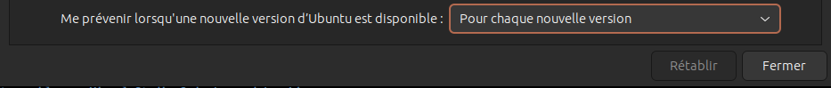

Documentation d'explications de manipulations diverses¶
Table des matières¶
- Documentation d'explications de manipulations diverses
- Table des matières
- Réinitialiser une clé USB ou un disque dur
- Changer le point de montage de la partition Windows sous Ubuntu desktop 22.04 et supérieur
- Monter uniquement un dossier
- Exécuter un script shell au démarrage d'Ubuntu 22.04 ou supérieur
- Mettre à jour Ubuntu 23.04 Lunar Lobster vers Ubuntu 23.10 Mantic Minotaur
- Réinstallation de l'envirronement graphique de Ubuntu (gnome)
- Mode Terminal de Ubuntu
- Modifier l'action du click sur une l'icone de l'application
- Désinstallation de fichier deb
- Réinstallation de windows à partir d'une image système
- Mettre à jour snap store d'Ubuntu
- Problème avec le gestionnaire de paquets apt - Linux
- Rendre l'adresse IP statique sur Ubuntu - Linux
- Modifier les noms de domaine
- Convertir les doubles espaces en 4 espaces dans un fichier avec vscode
- Licence
Réinitialiser une clé USB ou un disque dur¶
Supprimme toutes les données et toute les partitions de la clé USB
- fermet tout les gestionnaires de fichiers et terminaux ouverts sur la clé USB.
- Ouvrez un terminal
-
Passez en mode admin :
sudo su -
Listez les lecteurs :
fdisk -l -
Administrez le lecteur de votre choix :
X est la lettre de la clé USB
fdisk /dev/sdXdans mon cas :
fdisk /dev/sda -
Supprimez toutes les partitions : "
d X"X est le numéro de la partition, dans mon cas : "
d 1" et "d 2" -
Créez une nouvelle partition : "
n" - Choisissez le type de partition : "
p" - Choisissez le numéro de la partition : "
1" - Choisissez le premier cylindre, laisser la valeur par defaut et appuyer sur entrer
- Choisissez le dernier cylindre, laisser la valeur par defaut et appuyer sur entrer
- Sauvegardez les modifications : "
w" - Quittez fdisk : "
q"
Vous avez maintenant une clé USB vierge avec 1 partition non allouée
Changer le point de montage de la partition Windows sous Ubuntu desktop 22.04 et supérieur¶
-
Récupérer le nom de la partition windows :
sudo fdisk -l-
Sortie de la commande :
... Périphérique Début Fin Secteurs Taille Type /dev/nvme0n1p1 2048 309247 307200 150M Système EFI /dev/nvme0n1p2 309248 571391 262144 128M Réservé Microsoft /dev/nvme0n1p3 571392 629715869 629144478 300G Données de base Microsoft /dev/nvme0n1p4 629716992 632066047 2349056 1,1G Environnement de récupérati /dev/nvme0n1p5 632066048 962566143 330500096 157,6G Système de fichiers Linux /dev/nvme0n1p6 962566600 998334463 35767864 17,1G Environnement de récupérati /dev/nvme0n1p7 998334464 1000214527 1880064 918M Environnement de récupérati ...
-
-
Démonter la partition windows qui se nomme dans mon cas
/dev/nvme0n1p3mais ça peut être différent :sudo umount /dev/nvme0n1p3 -
Créer le dossier dans lequel sera monté la partition :
sudo mkdir /OS -
Donner les droits d'accès au dossier sinon la partition ne pourra pas être monté dans ce dossier :
sudo chmod 777 /OS -
Vérifier que la partition peut être monté dans le dossier :
sudo mount /dev/nvme0n1p3 /OS-
Si cette opération à fonctionner, vous pouvez démonter la partition à nouveau puis passer à l'étape suivante
sudo umount /dev/nvme0n1p3
-
-
Copier le fichier
/etc/fstabdans le dossier/etc/fstab_sauvegarde:sudo cp /etc/fstab /etc/fstab_sauvegarde -
Ajouter ces lignes au fichier
/etc/fstab:# Montage de la partition Windows /dev/nvme0n1p3 /OS ntfs3 rw,user,auto,exec,gid=1000,uid=1000,umask=002, utf8,codepage=850,shortname=mixed 0 0- Chaque champs est séparé par une tabulation
- "
# Montage de la partition Windows" : commentaire optionnel - "
/dev/nvme0n1p3" : nom de la partition - "
/OS" : dossier dans lequel sera monté la partition - "
ntfs3" : système de fichiers de la partition - "
rw,user,auto,exec,gid=1000,uid=1000,umask=002, utf8,codepage=850,shortname=mixed" : options de montage - "
0" : 0 pour ne pas faire de sauvegarde de la partition, 1 pour faire une sauvegarde de la partition - "
0" : 0 pour ne pas vérifier la partition au démarrage, 1 pour vérifier la partition au démarrage
-
Redémarrer l'ordinateur (cela peut prendre quelque minutes) :
sudo reboot
Monter uniquement un dossier¶
Attention, un dossier peut être monter uniquement si la partition sur laquelle il se trouve est monté au préalable
-
Créer le dossier dans lequel sera monté le dossier :
sudo mkdir /home/${USER}/<nom_du_dossier> -
Executer la commande suivant pour monter le dossier
sudo mount --bind /<chemin_du_dossier_a_monte> /home/${USER}/<nom_du_dossier>-
Dans mon cas
sudo mount --bind /OS/Mon_Drive/ /home/${USER}/Mon_Drive/
-
Exécuter un script shell au démarrage d'Ubuntu 22.04 ou supérieur¶
Exécuter le script en tant que super administrateur (pour les commandes sudo)¶
-
Ouvrer le fichier
crontaben administrateur grace à la commande suivante :sudo crontab -u root -e -
Si c'est la première fois que vous éditer ce fichier un choix d'éditeur vous sera demander. Choisissez celui que vous voulez mais je vous conseil fortement d'utiliser
nanoqui doit être en numéro1 -
Ajouter la ligne suivante à la fin du fichier
Surtout n'utiliser pas de variable d'environnement comme
${USER}parce qu'il est lancer en tant que root et que la variable ${USER} est vide lors de l'éxecution du script@reboot /path/to/script.sh-
Dans mon cas
@reboot /home/floris/.scripts_on_boot/mount_mon_drive.sh
-
-
Sauvegarder le fichier > Ctrl + X
- Confirmer la sauvegarde
- Ne modifier surtout pas pas le nom du fichier, appuyer sur entrer pour confirmer le nom qui entrer par défaut
-
Redémarrer l'ordinateur pour vérifier que le script s'exécute bien au démarrage
reboot
Exécuter le script en tant que l'utilisateur de la session en cours d'utilisation¶
-
Ouvrer le fichier
crontabgrace à la commande suivante :crontab -e -
Si c'est la première fois que vous éditer ce fichier un choix d'éditeur vous sera demander. Choisissez celui que vous voulez mais je vous conseil fortement d'utiliser
nanoqui doit être en numéro1 -
Ajouter la ligne suivante à la fin du fichier
@reboot /path/to/script.sh -
Sauvegarder le fichier > Ctrl + X
- Confirmer la sauvegarde
- Ne modifier surtout pas pas le nom du fichier, appuyer sur entrer pour confirmer le nom qui entrer par défaut
-
Redémarrer l'ordinateur pour vérifier que le script s'exécute bien au démarrage
reboot
Mettre à jour Ubuntu 23.04 Lunar Lobster vers Ubuntu 23.10 Mantic Minotaur¶
-
Vérifier que vous êtes bien sur Ubuntu 23.04 grâce à la commande suivante
Il peut être nécessaire de l'installer (via le packet apt neofetch)
neofetch-
Vous pouvez voir dans la sortie de la commande qu'en face de
OSil y a écritUbuntu 23.04avec l'architecture de votre système, dans mon casx86_64.-/+oossssoo+/-. floris@floris-Inspiron-5402 `:+ssssssssssssssssss+:` --------------------------- -+ssssssssssssssssssyyssss+- OS: Ubuntu 23.04 x86_64 .ossssssssssssssssssdMMMNysssso. Host: Inspiron 5402 /ssssssssssshdmmNNmmyNMMMMhssssss/ Kernel: 6.2.0-34-generic +ssssssssshmydMMMMMMMNddddyssssssss+ Uptime: 16 hours, 5 mins /sssssssshNMMMyhhyyyyhmNMMMNhssssssss/ Packages: 1893 (dpkg), 15 (snap) .ssssssssdMMMNhsssssssssshNMMMdssssssss. Shell: bash 5.2.15 +sssshhhyNMMNyssssssssssssyNMMMysssssss+ Resolution: 3840x2160 ossyNMMMNyMMhsssssssssssssshmmmhssssssso DE: GNOME 44.3 ossyNMMMNyMMhsssssssssssssshmmmhssssssso WM: Mutter +sssshhhyNMMNyssssssssssssyNMMMysssssss+ WM Theme: Adwaita .ssssssssdMMMNhsssssssssshNMMMdssssssss. Theme: Yaru-dark [GTK2/3] /sssssssshNMMMyhhyyyyhdNMMMNhssssssss/ Icons: Yaru [GTK2/3] +sssssssssdmydMMMMMMMMddddyssssssss+ Terminal: gnome-terminal /ssssssssssshdmNNNNmyNMMMMhssssss/ CPU: 11th Gen Intel i7-1165G7 (8) @ 4.700GHz .ossssssssssssssssssdMMMNysssso. GPU: Intel TigerLake-LP GT2 [Iris Xe Graphics] -+sssssssssssssssssyyyssss+- Memory: 4175MiB / 15712MiB `:+ssssssssssssssssss+:` .-/+oossssoo+/-.
-
-
Ouvrez le logiciel
Logiciels et mise à jour(en anglaisSoftware & Updates)
-
Allez dans l'onglet '
Mise à jour'
-
Changer la valeur de '
Me prévenir lorsqu'une nouvelle version d'Ubuntu est disponible' en 'Pour chaque nouvelle version'
-
Fermer le logiciel de mise à jour
- Ouvrer un terminal
-
Exécuter la commande suivante pour chercher les mises à jour de paquet à faire :
sudo apt update -
Exécuter la commande suivante pour mettre à jour les paquets :
sudo apt upgrade -
Ouvrer le fichier
/etc/update-manager/release-upgradesavec un éditeur de texte :code /etc/update-manager/release-upgrades- Vérifier que la dernière ligne est la même que celle ci-dessous et que la valeur de
Promptest biennormal, si se n'est pas le cas modifier votre fichier -
Résultat attendu :
# Default behavior for the release upgrader. [DEFAULT] # Default prompting and upgrade behavior, valid options: # # never - Never check for, or allow upgrading to, a new release. # normal - Check to see if a new release is available. If more than one new # release is found, the release upgrader will attempt to upgrade to # the supported release that immediately succeeds the # currently-running release. # lts - Check to see if a new LTS release is available. The upgrader # will attempt to upgrade to the first LTS release available after # the currently-running one. Note that if this option is used and # the currently-running release is not itself an LTS release the # upgrader will assume prompt was meant to be normal. Prompt=normal
- Vérifier que la dernière ligne est la même que celle ci-dessous et que la valeur de
-
Vous pouvez maintenant fermer l'éditeur de texte
-
Vous pouvez maintenant forcer le processus de mise à jour dans le terminal grâce à la commande suivante :
sudo do-release-upgrade -
Si il vous affiche '
No new release found' il existe deux solution :-
Réessayer la commande
sudo do-release-upgradeavec l'option-d:sudo do-release-upgrade -d -
Sinon attendez quelque jour puis recommencer. Cela peux être du au fait que votre ordinateur n'est pas supporter par la nouvelle la version 23.10 de Ubuntu
-
Réinstallation de l'envirronement graphique de Ubuntu (gnome)¶
-
pour réinstaller l'envirronement graphique lancer la commande
sudo apt-get install --reinstall ubuntu-desktop -
redémarer l'ordinateur
reboot
Mode Terminal de Ubuntu¶
- Pour ouvrir le mode terminal d'ubuntu > Ctrl + Alt + F3
- Pour quitter le mode terminal d'ubuntu > Alt + F2
Modifier l'action du click sur une l'icone de l'application¶
Avec le terminal¶
-
Ouvrez un terminal
gsettings set org.gnome.shell.extensions.dash-to-dock click-action 'minimize-or-previews'
Avec une application tierce¶
Modifier l'action du click avec une application tierce
Désinstallation de fichier deb¶
- source >https://www.baeldung.com/linux/apt-uninstall-dpkg-deb-package
-
Pour désinstaller un fichier deb, il faut utiliser la commande
dpkgavec l'option-rou--remove:sudo dpkg -r <nom_du_fichier_deb> -
Pour désinstaller et supprimer tout les fichiers de configuration d'un fichier deb, il faut utiliser la commande
dpkgavec l'option--purge:sudo dpkg --purge <nom_du_fichier_deb>
Réinstallation de windows à partir d'une image système¶
La réinstallation de windows à partir d'une image système permet de réinstaller windows sans perdre les données de la partition windows. Cette action est très longue, il faut compter plusieurs heures.
Création d'une image de la partition windows¶
- Ouvrir le logiciel
Panneau de configuration - Aller dans
Système et sécurité>Sauvegarder et restaurer (Windows 7) - Cliquer sur
Créer une image système - Sélectionner le disque dur sur lequel vous voulez créer l'image système
- Cliquer sur
Suivant - Patienter pendant la création de l'image système, cela peut prendre entre 30 minutes et 2 heures (environs)
Réinstallation de windows¶
- Boot sur la clé USB Ventoy
- Sélectionner le dossier correspondant à Windows
- Sélectionner les information de langage suivant :
- Langue à installer : '
Français (France)' - Format horaire et monétaire : '
Français (France)' - Clavier ou méthode d'entré : '
Français'
- Langue à installer : '
- Cliquer sur '
Suivant' - Au moment de l'installation cliquer sur '
Réparer l'ordinateur' - Cliquer sur '
Dépannage' - Cliquer sur '
Récupération de l'image système' - Cliquez sur votre image, normalement il y en a qu'une
- Sélectionner '
utiliser la dernière image système (recommendé)' - Cliquer sur '
Suivant' - Sélectionner '
Formater et répartionner les disques' - Attention très important
- Sélectionner les disques à exclure de la réinstallation de windows, dans mon cas j'ai sélectionner tout les disques sauf celui sur lequel je veux réinstaller windows
- Cliquer sur '
Suivant' - Laisser les options
Date et heure,OrdinateuretLecteurs à restaurerpar défaut - Cliquer sur '
Terminer' - Confirmer la réinstallation de windows en cliquant sur '
Oui' - Patienter pendant la réinstallation de windows, cela est très long (plusieurs heures)
- de retour sur l'affichage de ventoy, redémarrer l'ordinateur
Mettre à jour snap store d'Ubuntu¶
snap-store --quit && sudo snap refresh snap-store
Problème avec le gestionnaire de paquets apt - Linux¶
-
Si vous avez un problème avec le gestionnaire de paquets apt, lancer la commande :
sudo apt --fix-broken install-
Si se message d'erreur s'affiche :
Lecture des listes de paquets... Fait Construction de l'arbre des dépendances... Fait Lecture des informations d'état... Fait E: Le paquet <package_name> doit être réinstallé, mais il est impossible de trouver son archive.- C'est que le paquet est cassé et qu'il faut le supprimer de la façon décrite ci-dessous
- Si un paquet est cassé et en état de réinstallation obligatoire (reinstreq), vous pouvez le supprimer avec la commande suivante :
sudo dpkg --remove --force-remove-reinstreq <package_name> -
Rendre l'adresse IP statique sur Ubuntu - Linux¶
-
Source > https://freecodecamp.org/news/setting-a-static-ip-in-ubuntu-linux-ip-address-tutorial/
-
Récupérer l'adresse IP, le nom de votre interface réseau, le masque de sous-réseau et la passerelle par défaut
-
Pour récupérer l'adresse IP, le nom de votre interface réseau et le masque de sous-réseau lancer la commande :
ip a -
Pour récupérer la passerelle par défaut lancer la commande :
ip route
-
-
Créer un fichier de configuration pour votre interface réseau :
sudo touch /etc/netplan/01-network-manager-all.yaml -
Ouvrir le fichier de configuration avec un éditeur de texte :
sudo open /etc/netplan/01-network-manager-all.yaml -
Ajouter les lignes suivantes au fichier :
network: version: 2 renderer: NetworkManager ethernets: eth0: dhcp4: no addresses: [<ip_fixe>/<netmask>] gateway4: <gateway_ip> nameservers: addresses: [8.8.8.8,8.8.8.4]<ip_fixe>: adresse IP statique<netmask>: masque de sous-réseau<gateway_ip>: passerelle par défaut
-
Tester la configuration :
sudo netplan try -
Appliquer la configuration :
sudo netplan apply -
Vérifier que la configuration est bien appliquée :
ip a -
Votre adresse IP doit être celle que vous avez rentré dans le fichier de configuration
- Ça n'a pas fonctionné, je suis passé par l'inteface graphique de Ubuntu pour configurer l'adresse IP statique, c'est beaucoup plus simple et ça a fonctionné parfaitement
-
Voici le fichier génére par l'interface graphique :
network: version: 2 ethernets: enp3s0: renderer: NetworkManager match: {} addresses: - "192.168.1.250/24" networkmanager: uuid: "<uuid>" name: "netplan-<nom_carte_reseau>" passthrough: connection.timestamp: "1720295850" ipv4.address1: "192.168.1.250/24,<gateway>" ipv4.method: "manual" ipv6.method: "disabled" ipv6.ip6-privacy: "-1" proxy._: ""
-
Modifier les noms de domaine¶
Modifier les noms de domaine de façon temporaire¶
Attention, cette modification est temporaire, elle sera perdu après un redémarrage de l'ordinateur. Si vous voulez une solution définitive passé à la prochaine étape
- Ouvrir un terminal
-
Modifier le fichier
/etc/resolv.confsudo nano /etc/resolv.conf -
Ajouter les lignes suivantes à la fin du fichier :
... nameserver <nouvelle_adresse_ip><nouvelle_adresse_ip>: nouvelle adresse IP du serveur DNS-
Exemple avec les serveurs DNS de Google :
... nameserver 8.8.8.8 nameserver 8.8.4.4
-
Sauvegarder le fichier > Ctrl + X
- Confirmer la sauvegarde
- Ne modifier surtout pas pas le nom du fichier, appuyer sur entrer pour confirmer le nom qui est entrer par défaut
-
Vérifier que la modification est bien prise en compte
ping google.com
Modifier les noms de domaine de façon permanente¶
-
source : > https://www.baeldung.com/linux/permanent-etc-resolv-conf
-
Modifier le fichier
/etc/NetworkManager/NetworkManager.confsudo vim /etc/NetworkManager/NetworkManager.conf -
Ajouter
dns=nonesous la section[main][main] dns=none ... -
Redémarrer le service NetworkManager
sudo systemctl restart NetworkManager.service -
Désactiver le service systemd-resolved pour éviter qu'il écrase les modifications apportées au fichier
/etc/resolv.confau prochain redémarragesudo systemctl disable --now systemd-resolved.service -
Désactiver également tout les autres services qui pourraient modifier le fichier
/etc/resolv.confsi vous en avez.
Convertir les doubles espaces en 4 espaces dans un fichier avec vscode¶
- Ouvrir le fichier avec vscode
- Cliquer sur l'icone en bas à droite qui indique le nombre d'espaces par tabulation
- Sélectionner
Convertir les retraits en tabulations - Cliquer sur l'icone en bas à droite qui indique le nombre d'espaces par tabulation
- Sélectionner
Mettre en retrait avec des espaces - Sélectionner le nombre d'espaces par tabulation (en l'occurrence
4) - Cliquer sur
Convertir les retraits en espaces - Sauvegarder le fichier > Ctrl + S
Licence¶
Copyright (C) 2024 Floris Robart
Authors: Floris Robart
This program is free software; you can redistribute it and/or modify it under the terms of the GNU Lesser General Public License as published by the Free Software Foundation; either version 2.1 of the License, or (at your option) any later version.
This program is distributed in the hope that it will be useful, but WITHOUT ANY WARRANTY; without even the implied warranty of MERCHANTABILITY or FITNESS FOR A PARTICULAR PURPOSE. See the GNU Lesser General Public License for more details.
You should have received a copy of the GNU Lesser General Public License along with this program; if not, write to the Free Software Foundation, Inc., 51 Franklin Street, Fifth Floor, Boston MA 02110-1301, USA.